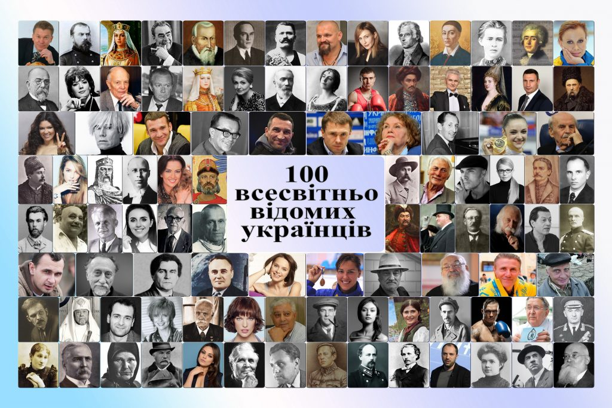

Біографія відомих людей
У біографій та мемуарів є надзвичайна цінність – їхня правдивість.
Натиснувши по посиланні, вам відкриється біографія цих людей
Ними захоплюються. За ними спостерігають. Їх обговорюють.
Біографія людей із вікіпедії
Подивіться на зображення, можливо когось впізнаєте
